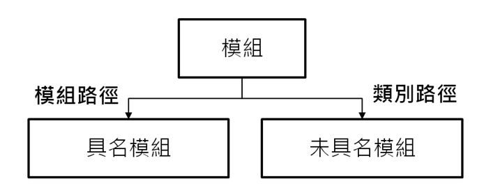
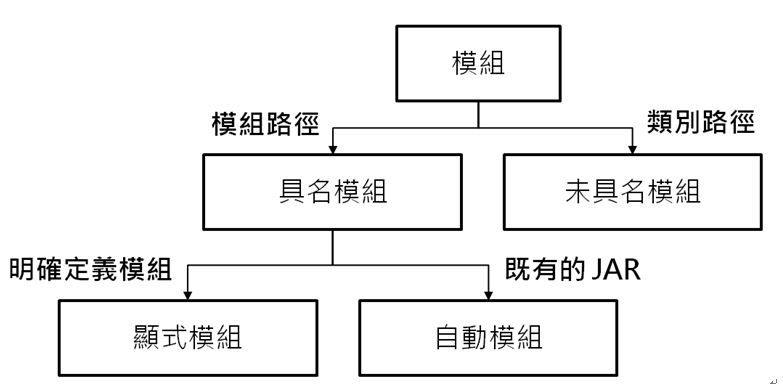

模組名稱
September 28, 2022在〈初探模組〉中，談到了如何建立、編譯、運行簡單的模組，在模組描述檔的設定中，知道模組必須 exports 套件，另一個模組在 requires 了該模組之後，才能使用那個套件中的類別。
具名／未具名模組
你認識了模組路徑，也知道了在類別路徑下被發現的類別，都會被自動歸類到未具名模組，在模組路徑下被發現的類別，都屬於某個具名模組。
如果應用程式採取模組化設計，預設就會依賴在 java.base 模組之上，java.base 模組 exports 了它全部的套件，任何模組都可以讀取 java.base 模組。

在 JDK8 以前，public 表示各套件間，也就是整個應用程式都可以存取，然而，在 JDK9 以後多了模組，模組中的 public 類別、方法、值域是否能被另一模組看見，還要視模組設定而定。
在定義模組時必須記得，同一個套件不可以同時出現在被 requires 的兩個模組中，這稱為分裂套件（Split package）會導致編譯失敗，而執行時期會產生 LayerInstantiationException。
就算是 Java SE API，若不是 java.base 模組中的類別，還是必須 requires 相關的模組，例如，要使用內建日誌 API 的話，必須 requires java.logging，想使用 JDBC API 的話，必須 requires java.sql。
許多程式庫都還沒有模組化，那麼該怎麼使用這個 JAR 檔案呢？暫時放在類別路徑上的話，會成為未具名模組，因為未具名模組沒有名稱，如果你的應用程式採取模組化設計，就沒有辦法在模組描述檔中 requires 了，這時候程式碼想使用類別路徑上的 API 就會發生編譯錯誤了。
不過，如果程式碼中不會依賴在到任何 JAR 檔案的 API，例如 JDBC 驅動程式類別是採用反射（Reflection）來載入，之後透過 JDBC 標準 API 來撰寫程式，因此將驅動程式的 JAR 放在類別路徑上，就算採取模組化設計，只要 requires java.sql，之後就可以使用 JDBC 載入驅動程式進行資料庫連線。
你也許只是想讓既有的應用程式跑在 JDK9 以後的平台，不打算模組化，也就是從程式進入點開始的每個類別，都是基於類別路徑，也就是都在未具名模組之中，然而要注意的是，對於其他同樣是放在類別路徑上的 JAR，在 API 的使用上也許沒有問題，使用的是 java.sql、java.util.logging 套件中的 API 也 OK，然而若使用到 javax.xml.bind.*、javax.rmi 等套件，還是會出現編譯錯誤。
這是因為這些套件雖然包含在 Java SE 中，然而實際上是與 Java EE 相關的 API，在 JDK9 中還是有這些套件，不過被劃分到 java.se.ee 模組，JVM 預設並不會載入這個模組，因此編譯與執行時，必須使用 --add-modules java.se.ee，才找得到這些套件。
顯式／自動模組
許多程式庫都還沒有模組化，為了相容性，是可以將這些程式庫的 JAR 放在類別路徑之中，但是對於採用模組化，明確定義了模組並放在模組路徑中，這樣的模組稱為顯式模組（Explicit module），顯式模組無法依賴在未命名模組，因為未具名模組並沒有名稱，無法在顯式模組的模組描述檔中進行 requires，如果你的程式碼中得使用未具名模組的類別，編譯時期就會找不到類別了。
若是採模組化設計，可以將未支援模組化設計的 JAR 檔案放在模組路徑，這會使得該 JAR 檔案被視為自動模組（Automatic module），自動模組也是具名模組的一種，稍後會看到名稱產生的規則，有了模組名稱之後，就可以 requires 自動模組，也就可以使用自動模組中公開的類別、方法與值域。
基於相容性，自動模組有隱含的模組定義，可以讀取其他模組，其他模組也可以讀取自動模組，應用程式在遷移至模組化設計的過程中，自動模組會是未具名模組至顯式模組之間的橋樑。

並不是任何 JAR 都可以自動產生正確的模組名稱，既有的 JAR 若還沒有任何調整下，預設是基於檔名來產生名稱，產生的規則會是：
- 取得 JAR 的主檔名：若是 cc.openhome-1.0.jar 的話，就取得 cc.openhome-1.0 這個名稱。
- 去除版本號：版本號必須是連字號（
-）或底線（_）後跟隨著數字，找到版本號之後，取得連字號（-）或底線（_）前的名稱，例如 cc.openhome.util-1.0 的話，就使用 cc.openhome.util，cc-openhome-util_1.0 的話，就使用 cc-openhome-util；如果沒有版本號的話，例如 cc_openhome_util，就直接使用該名稱。 - 替換名稱中非字母部份為句號（
.）：因此對於 cc.openhome.util、cc-openhome-util 或 cc_openhome_util，最後決定出來的自動模組名稱都會是 cc.openhome.util。
在產生自動模組名稱時，JAR 主檔名不能有多個版本號區段，例如 cc.openhome.util_1.0-spec-1.0 的話，無法自動產生正確的模組名稱，此時若被放到模組路徑的JAR檔案，編譯時期沒有名稱可以 requires，而執行時期會產生 IllegalArgumentException，從而使得JVM無法初始模組層而發生 FindException。
若不想基於檔名決定自動模組名稱，既有的 JAR 中，可以在 META-INF/MANIFEST.MF 裏增加 Automatic-Module-Name，指定自動模組名稱，然而對於第三方程式庫的既有 JAR，不建議自己做這個動作，最好是讓第三方程式庫的釋出者決定自動模組名稱，免得以後產生名稱上的困擾。
在決定自己的應用程式是否遷移至模組化之前，看看使用到的各程式庫官方是不是都決定好（自動）模組名稱了，可以免去後續自行修改模組名稱的麻煩。
如果同一個套件出現在模組路徑上多個既有的 JAR 檔案中，由於一個套件不能出現在多個模組，因此只有其中一個 JAR 能成為自動模組，而其他會被忽略。